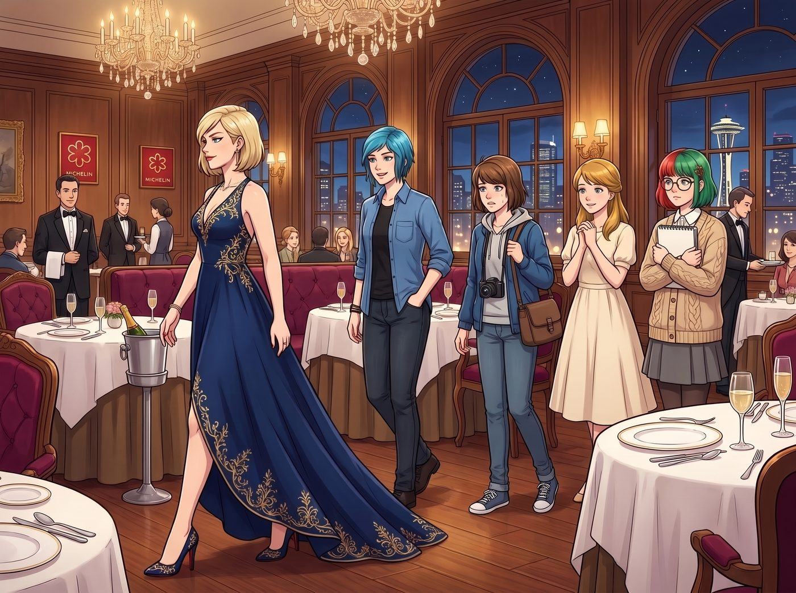
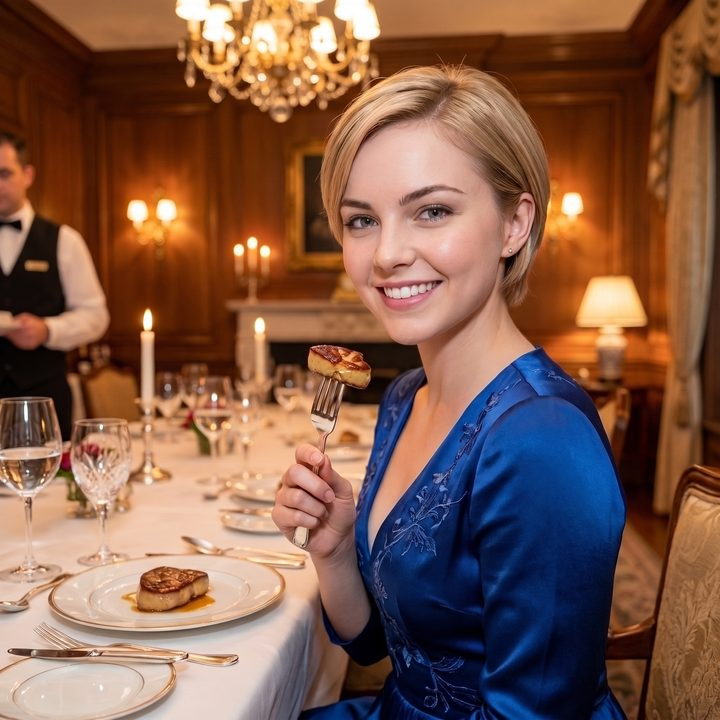
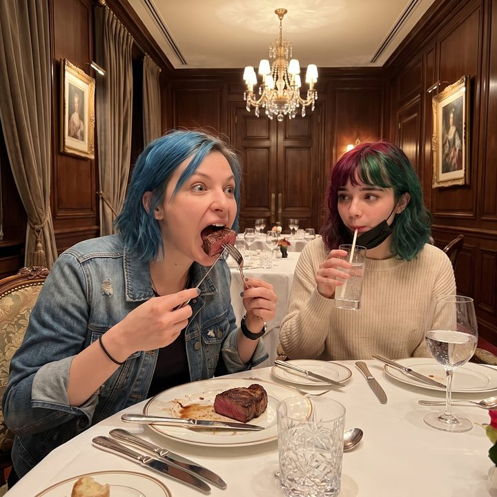

攝影指導的特權



西雅圖市中心，某家剛蟬聯米其林三星的頂級法式餐廳內。
Victoria 穿著一套價值八千美元的晚禮服，踩著紅底鞋，帶著她那剛剛簽下千萬級政府合約的傲氣，走進了這間裝潢奢華的餐廳。跟在她身後的，是換上了乾淨襯衫的 Chloe、忐忑不安的 Max、溫柔的 Kate，以及依然穿著米色針織衫、平靜得彷彿來視察業務的 Lily。
然而，迎接她們的不是戴著白手套的侍者和悠揚的大提琴聲，而是一個猶如生化危機現場的災難性佈置。
一、口罩探監室
豪華的法式長桌被殘忍地拆分。每一張桌子之間都豎起了厚厚的、邊緣還帶著反光膠帶的壓克力防飛沫隔板。餐廳經理穿著全套的黑色防護服，戴著N95口罩和護目鏡，用一種極其抱歉但毫無商量餘地的語氣攔住了她們。
「晚上好，Chase 小姐。恭喜您的到來。」餐廳經理隔著兩公尺的距離微微鞠躬，「但根據州衛生局昨天剛發佈的第三級餐飲業防疫限制令，我們必須嚴格執行以下規定：第一，您們五位如果不屬於同一個直系親屬戶口，必須分開坐在五張被壓克力板隔開的桌子上。第二……」
經理嚥了一口唾沫，硬著頭皮說出了最離譜的那條規定：「第二，除了食物送入口中的那一秒鐘，您們必須全程佩戴口罩。這意味著，您每吃一口魚子醬，都必須把口罩拉下來，吃進去，然後立刻拉上去咀嚼。違者，我們將面臨停業整頓的處罰。」
Victoria 愣在原地，彷彿被雷劈了一樣。「妳讓我……戴著口罩吃法式大餐？！」Victoria 的聲音隔著她臉上的絲綢口罩，依然透著快要爆炸的憤怒，「我花了兩萬美金包下這個區域，妳讓我像個在化學實驗室裡偷吃餅乾的老鼠一樣，每吃一口都要拉一下口罩？！」
而此時，站在壓克力板旁邊的 Chloe，已經笑得快要直不起腰了。「哈哈哈哈！對不起，大小姐，我實在忍不住了！」Chloe 隔著口罩狂笑，指著那一排猶如探監室一樣的座位，「妳的鈔能力在衛生局的鐵拳面前就是個笑話！去坐好啊，去妳的單人豪華探監室裡，把妳那昂貴的松露一口一口地塞進口罩裡吧！」
二、備案的許可
Victoria 氣得渾身發抖。她不能發火，不能砸錢，又不能轉身就走。
就在這個進退兩難、屈辱感即將達到頂峰的時刻。
「請稍等一下，經理先生。」Lily 柔和的聲音響起。她上前一步，擋在了即將崩潰的 Victoria 和準備看戲的 Chloe 中間。
「您剛才提到的限制令，請問貴餐廳在疫情期間，是否為了維持營運，向州政府申請了商業媒體與影視製作場地的備案許可？」Lily 拿出平板電腦，推了推圓框眼鏡。
經理愣了一下：「呃……是的。上個月有幾個美食節目來拍過外景，為了讓他們合法拍攝，我們確實註冊了這個豁免資格。但是您們這……」
「那就沒問題了。」Lily 轉身，一把將躲在後面的 Max 拉了出來。
「Max 學姐，把您的相機拿出來。對，就是那台寶麗來。」Lily 將 Max 推到餐廳的正中央，然後對著經理露出了一個無比純潔、卻讓在場所有人都感到一陣惡寒的微笑。
三、劇組人員
「經理先生，我現在代表基金會抗疫紀錄片籌備組正式通知您。今晚我們在這裡進行的，不是一場餐飲消費。」Lily 手指在平板上飛速滑動，調出一份演員工會和州影視委員會的疫情期緊急豁免條款，懟到經理面前。
「這是一場封閉式的商業影視拍攝。這兩萬美金，不是餐費，而是我們支付給貴餐廳的場地租賃費與劇組餐飲補貼。Victoria 學姐是本紀錄片的領銜主演，Chloe 學姐和 Kate 學姐是群眾演員，我是現場製片人，而這位拿著相機的 Max 學姐，是我們的攝影指導。」
Lily 用螢光筆在平板上劃出最核心的一條法規，語氣溫柔而致命：「根據影視製作防疫豁免條款：在封閉的拍攝現場，處於鏡頭前的演藝人員，在正式拍攝期間，享有免除佩戴口罩及保持六英尺社交距離的合法豁免權。」
餐廳經理呆若木雞。
「所以，」Lily 轉頭看向 Victoria，「主演女士，請入座。您不需要口罩，也不需要那些見鬼的壓克力板。」
Victoria 震驚地看著 Lily，隨後，一抹狂喜與無比高傲的笑容重新回到了她的臉上。她優雅地摘下口罩，隨手遞給旁邊已經看傻了的服務生，踩著紅底鞋，昂首挺胸地走到那張最豪華的長桌主位坐下。
「等等，這也行？！」Chloe 瞪大了眼睛，她本來準備好了一肚子嘲諷的話，結果硬生生被這波行政黑魔法塞回了喉嚨裡。
「Chloe 學姐，作為群演，如果您不想戴口罩，就請確保自己隨時待在攝影指導的鏡頭取景框內。」Lily 溫馨地提醒道。
四、持續拍攝中
於是，西雅圖這家米其林三星餐廳裡，出現了疫情期間最荒誕、也最奢華的一幕。
防飛沫的壓克力板被服務生們誠惶誠恐地撤走。Victoria 完美地展現著她名媛的優雅，與 Chloe、Kate 一起坐在長桌旁，毫無阻礙地品嚐著白松露和頂級魚子醬。沒有人戴口罩，沒有人保持社交距離。
而這一切合法的代價，就是 Max 必須全程舉著那台寶麗來相機。
「Max，麻煩把鏡頭對準我。對，我要吃這口鵝肝了，確保我在拍攝中。」Victoria 舉著叉子，對著 Max 露出了一個無懈可擊的鏡頭感微笑。
「咔嚓。」Max 無奈地按下快門。閃光燈亮起，一張照片吐了出來。
「實習生，」Chloe 一邊大口嚼著和牛，一邊看著坐在旁邊、唯一一個依然戴著口罩、正用吸管喝著氣泡水的 Lily，語氣裡充滿了挫敗與敬畏，「妳到底還有多少種方法能把法律按在地上摩擦？」
「我沒有摩擦法律，Chloe 學姐。我只是嚴格遵守了另一套法律。」Lily 隔著口罩，聲音依然軟糯，「而且，這對餐廳來說也是雙贏。他們不僅賺到了兩萬美元的場地費，還能把這筆收入在稅務上申報為企業對企業的影視服務，從而避開餐飲業的懲罰性稅率。」
那個剛才還鐵面無私的餐廳經理，此刻正親自端著一瓶香檳走過來，看著 Lily 的眼神充滿了感激，彷彿在看一個拯救了他們這個月營業額的救世主。
五、永遠是對的
Max 放下相機，揉了揉有些發酸的手腕。
她看著滿桌的珍饈美味，又看了看那個用影視拍攝豁免權硬生生給 Victoria 砸出了一個無口罩特權的行政魔王。
她在剛才拍下的那張 Victoria 吃鵝肝的寶麗來照片背後，默默寫下：
『這世上沒有什麼是吃一頓米其林解決不了的。如果吃癟了，那就把米其林餐廳變成好萊塢片場。Lily 永遠是對的。』